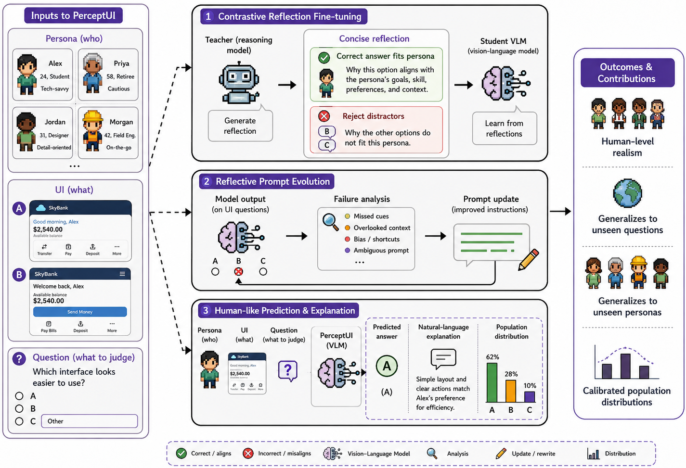
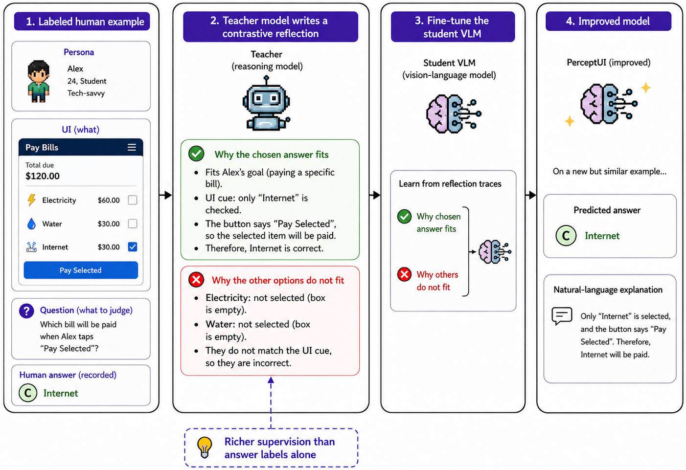
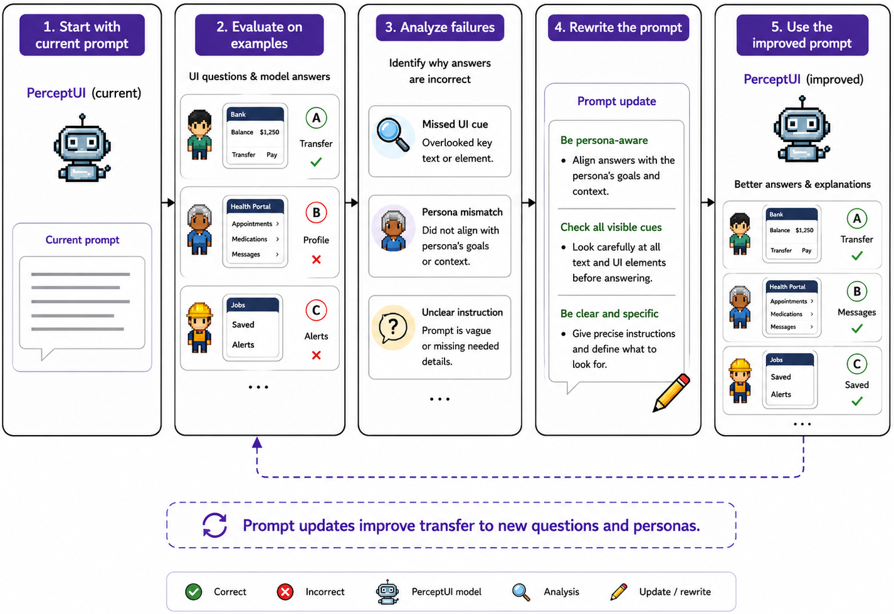

LLM Agents as Human-Aligned Synthetic Users for UI/UX Evaluation
User interface (UI) and user experience (UX) evaluation is central to product development, yet reliable feedback still relies on recruiting human participants or running online A/B tests, making early-stage iteration slow and costly. In light of this, recent work has explored Multimodal Large Language Models as proxy evaluators. However, existing approaches either produce surface-level critiques or a judgment that reflects the model's own biases rather than the genuine response of a particular user. We introduce PerceptUI, a framework for persona-conditioned UI/UX evaluation that predicts how a specific user would answer interface-related questions and produces natural-language rationales. PerceptUI is trained in two stages: (i) contrastive reflection fine-tuning distills teacher-generated rationales by extracting lessons from human decisions, and (ii) a reflective prompt-evolution step from the model's own failure traces. Across multiple domains and datasets, PerceptUI achieves human-level realism, generalizes to unseen questions and personas, and yields population-level response distributions.
UI judgments are often user-dependent: the same interface can be perceived differently depending on a user's goals, prior experience, visual preferences, or domain familiarity. Existing MLLM evaluators score interfaces from a model-centric perspective — they reflect the model's own preferences or imitate average labels, without modeling why a particular user would select one answer over another. PerceptUI instead treats UI/UX evaluation as persona-conditioned question answering: given a UI screenshot, a user persona, and a question, it predicts how that specific user would respond and generates a natural-language rationale for the prediction.

Figure 1: Overview of PerceptUI. From a UI screenshot, persona, and question, a teacher model writes a contrastive reflection that justifies the correct answer and the rejection of each distractor; this supervises a student vision-language model (contrastive reflection fine-tuning). A reflective prompt-evolution loop then refines the inference prompt from failure traces. At test time PerceptUI predicts human-like answers with explanations and calibrated population-level distributions.
PerceptUI aligns a vision-language model with genuine users through a two-stage pipeline — contrastive reflection fine-tuning to disentangle human preferences, then reflective prompt evolution to address residual errors:
Each example is a tuple of UI screenshot, optional reference image, question, answer options, and a natural-language persona. The model generates both a rationale and an answer; averaging the answer marginal over a population of personas induces a response distribution that can be compared against the empirical distribution of human answers.
UI- and persona-grounding prompts first extract question-relevant visual evidence and persona-relevant preferences (without seeing the ground-truth answer). A teacher model then writes a contrastive rationale structured into UI evidence, persona relevance, and option contrast — justifying the recorded answer while explaining why each distractor is rejected — and the student is fine-tuned to reproduce rationale-then-answer.
With model parameters frozen, the inference prompt is optimized from the model's own failures. An evaluator produces a symbolic loss (signed residuals plus failure traces), an analyzer turns it into a symbolic gradient of prompt-level edits, and an optimizer applies them. An LLM judge audits candidates to reject answer leakage or dataset-specific shortcuts, returning the lowest-residual prompt.
The student is instantiated with Qwen-VL. At inference, the model first generates UI and persona grounding summaries, then predicts a rationale and answer under the evolved prompt — acting as a non-personalized UI evaluator when persona information is unavailable.

Figure 2: Contrastive reflection fine-tuning. A teacher model turns each labeled example into a reflection that explains why the chosen answer fits and why the alternatives do not, providing richer supervision than answer labels alone.

Figure 3: Reflective prompt evolution. Starting from an initial prompt, PerceptUI evaluates on examples, analyzes recurring failures (missed UI cues, persona mismatch, unclear instructions), and rewrites the prompt — improving transfer to new questions and personas without manual survey-specific tuning.
We evaluate PerceptUI on six datasets covering complementary UI/UX tasks — WiserUI-Bench, UIClip/BetterApp, WebDevJudge, LabintheWild, LabintheWild-UX, and UICrit — plus a proprietary automotive-interface survey, UXCar.
On WiserUI-Bench (300 UI pairs with A/B-test-validated winners), the model selects the design more likely to guide users toward the intended action. Consistent Accuracy (CA) — requiring the correct choice under both input orders — is the most informative metric, since many MLLMs achieve high Second Accuracy but low First Accuracy due to position bias. PerceptUI achieves the best order-robust metrics:
| Method | Setting | FA ↑ | SA ↑ | AA ↑ | CA ↑ |
|---|---|---|---|---|---|
| Random | – | 50.00 | 50.00 | 50.00 | 25.00 |
| GPT-5 | Zero-shot | 33.91 | 89.80 | 61.86 | 31.09 |
| InternVL-2.5-38B | Zero-shot | 55.67 | 60.00 | 57.83 | 34.56 |
| GPT-5 | MAD (R1) | 53.78 | 69.62 | 61.70 | 40.56 |
| PerceptUI | w/o RPE | 59.80 | 85.20 | 72.50 | 41.10 |
| PerceptUI | – | 62.10 | 86.40 | 74.25 | 44.30 |
On UIClip/BetterApp the model selects the higher-quality interface from a pair of screenshots. Zero-shot LVLMs perform close to chance, while PerceptUI exceeds even UIClip's UI-specific contrastive pre-training — showing it can serve as a general UI evaluator even without persona information:
| Method | Setting | Overall Acc. ↑ |
|---|---|---|
| GPT-5 | Zero-shot | 55.36 |
| UIClip | JitterWeb + Web Pairs + Human | 73.88 |
| UIClip | JitterWeb + Web Pairs | 75.12 |
| PerceptUI | – | 79.28 |
Annotators rate explanations on UI grounding, persona use, contrastiveness, and overall usefulness (1–5 scale) on UXCar. Label-only SFT produces the weakest explanations; PerceptUI scores highest across every criterion, indicating rationales that are more consistently UI-grounded, persona-aware, and contrastive:
| Method | UI Grounding | Persona Use | Contrastiveness | Overall |
|---|---|---|---|---|
| GPT-5 | 3.61 | 3.32 | 3.47 | 3.56 |
| Claude Opus 4.6 | 3.34 | 3.01 | 3.13 | 3.29 |
| SFT | 2.61 | 2.38 | 2.29 | 2.74 |
| PerceptUI | 3.91 | 3.74 | 3.88 | 3.94 |
On LabintheWild (website aesthetics, 1–9 Likert) and LabintheWild-UX (prototypicality, aesthetics, trustworthiness, and pre-use usability), participant ratings are linked to profiles. PerceptUI performs best across all metrics, and the gap between no-persona and persona-conditioned variants confirms that participant profiles carry useful signal for subjective judgments:
| Method | LabintheWild (UI Rating) | LabintheWild-UX (Perception) | ||
|---|---|---|---|---|
| Acc ↑ | ρ ↑ | Acc ↑ | ρ ↑ | |
| GPT-4o (zero-shot) | 27.84 | 0.412 | 38.04 | 0.453 |
| Generic persona (SFT) | 32.18 | 0.495 | 44.18 | 0.534 |
| PerceptUI w/o RPE | 41.23 | 0.621 | 54.16 | 0.661 |
| PerceptUI | 43.51 | 0.658 | 56.28 | 0.703 |
On the automotive UXCar survey — with questions grouped into comprehension, clarity, perception, and spatial location — PerceptUI achieves the strongest macro-F1 across all groups, and removing contrastive reflection sharply degrades performance, confirming that explaining why one answer fits better than the alternatives captures user-specific judgment cues beyond answer imitation.
PerceptUI is evaluated across six public benchmarks and one proprietary survey: